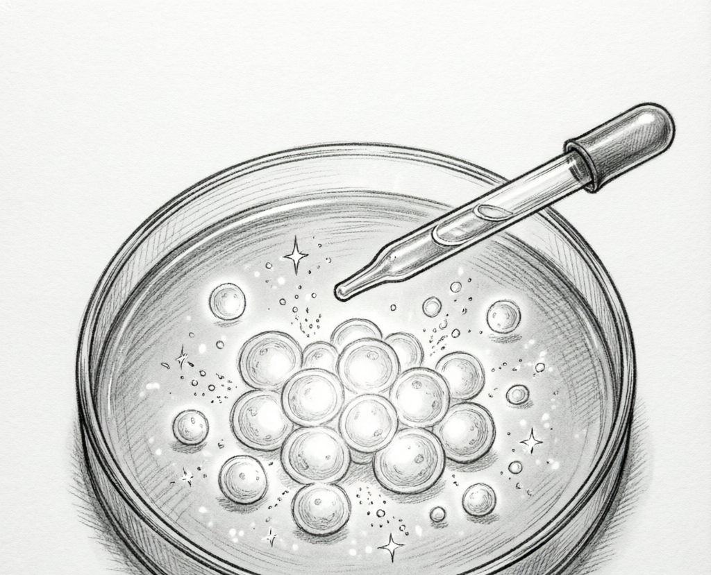
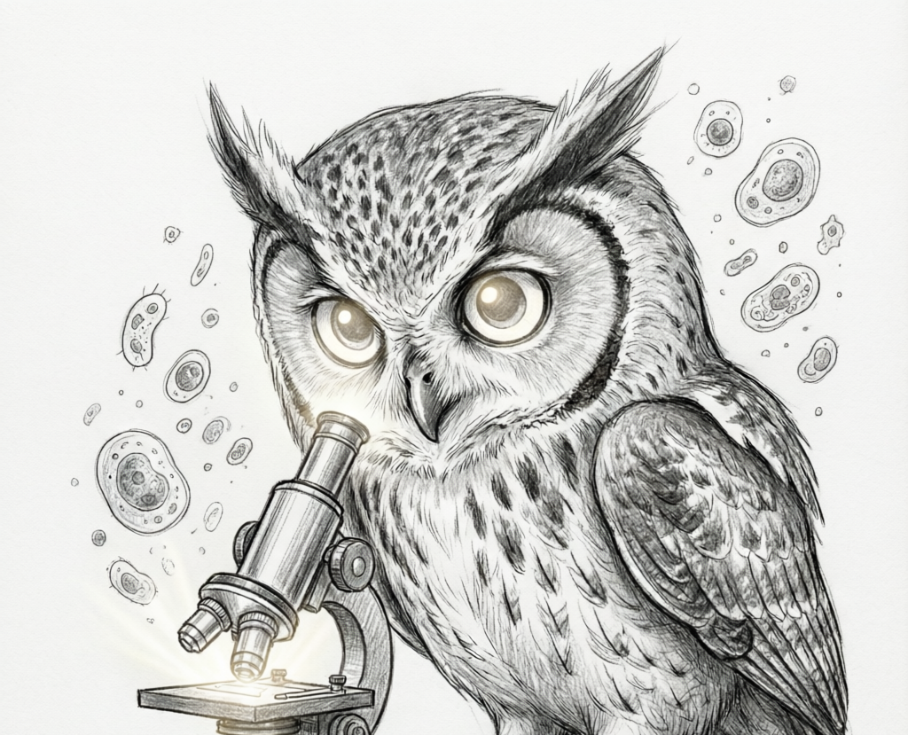
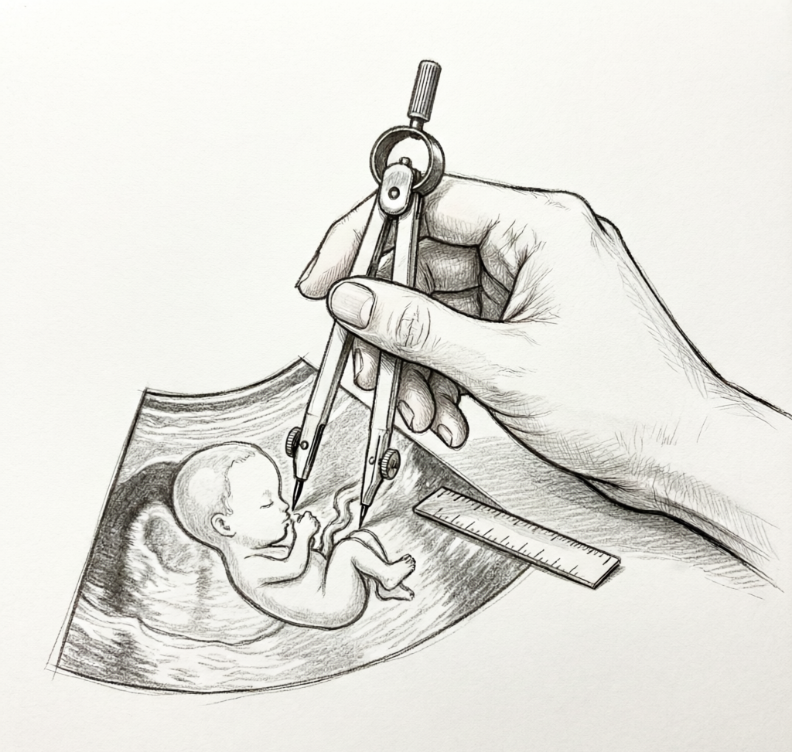
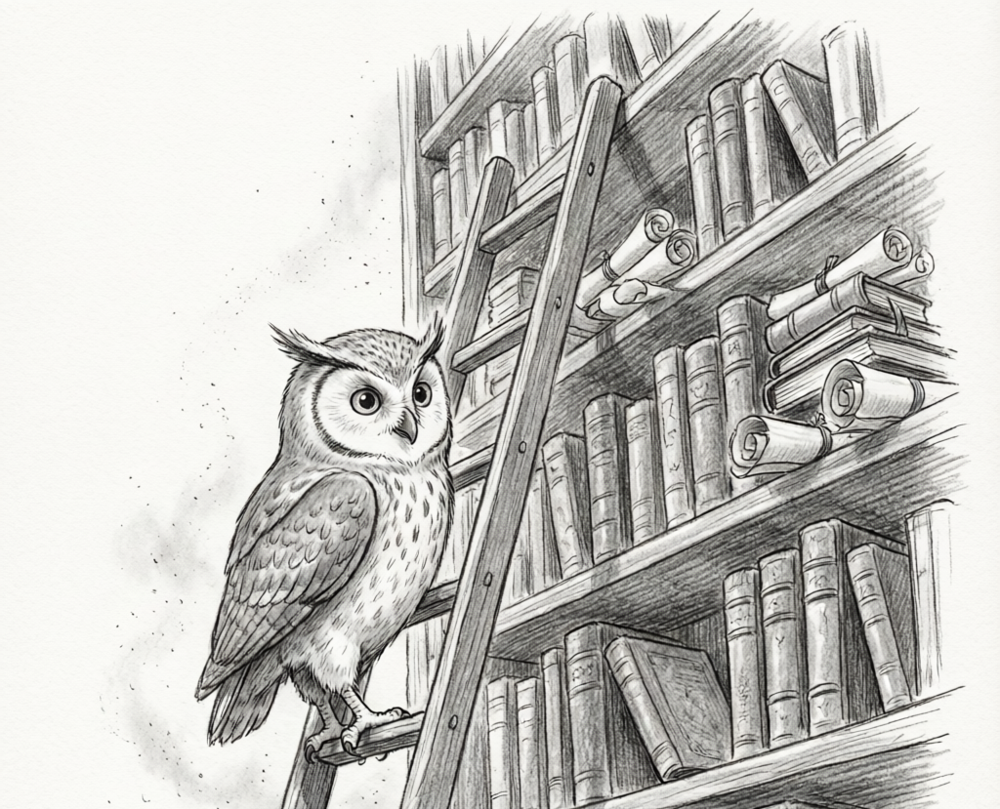

模态无关
一种环境，所有成像方式
只要是生物医学图像，处理思路一致。新的成像方式或算法按同一接口接入。

病理切片 WSI
全幅切片 · 细胞核检测

超声图像
颈动脉 · 胎儿 · 心脏

CT 体积
TotalSegmentator · 3D 重建

荧光显微
Cellpose · 形态分析
Glaux 是生物医学影像洞察的 Agent 原生环境——智能体在这里规划、执行、验证， 把显微镜、超声、CT 等任意模态的图像，变成可核对、可复现的科学结果。
Glaux 的核心价值不在某个智能体，而在智能体赖以工作的环境—— 眼、手、裁判、经验，四层能力让模型真正发挥价值。

把显微镜、超声、CT、病理切片等任意模态解码成统一的可计算表征——智能体看到的不是像素，而是结构化的科学对象。

分割、测量、重建作为一等操作，每个结果都带物理单位、尺度校准和模态护栏——不是返回一个 mask，而是给出可信的数值。
多方法一致性检查、校准过的不确定信号、完整 provenance——每个结论都可追溯、可重跑、经得起同行评审。

已验证轨迹 + 人工校正 + 领域先验 + Atlas 图谱——环境会积累经验，越用越聪明，这是复利型护城河。
本地运行由三个进程组成，make -j3 dev 一键拉起。 重模型在隔离子进程中运行，主进程不加载 PyTorch。
VS Code 风格的影像标注工作台：与智能体对话、查看图像、核对每一步结果。
唯一与模型对话的进程——规划、执行、检查、修正，通过工具对环境动手，密钥只在这里。
真正处理图像的部分：读取、分割、测量、重建，每个结果都带核验与操作记录。
只要是生物医学图像，处理思路一致。新的成像方式或算法按同一接口接入。
全幅切片 · 细胞核检测
颈动脉 · 胎儿 · 心脏
TotalSegmentator · 3D 重建

Cellpose · 形态分析
Glaux 负责从图像到理解再到可用的结果。边界是刻意划的。
装好就能用——仓库自带参考智能体，也可以换上你自己的模型。